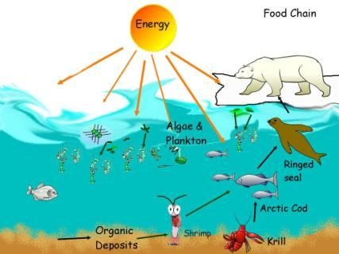

The Sidratul-Muntaha connects the channels via a landing zone on the East Araf and another landing zone on the West Araf. These channels start from the landing zones and traverse the Super Space to connect the universes (Samawaat and Jannaat). Thus, the Sidratul- Muntaha and the channels form a path (As-Sirat) that allows movement from this universe (Samawaat) to the Jannaat. After the Judgment, humans will traverse this path to reach the Jannaat. The Sidratul-Muntaha monitors the movements. Those whose sins and good deeds are equal will be rejected by the Sidratul-Muntaha and halted at the landing zone of the East Araf. The above verses describe the interactions between the halted individuals and those heading to hell, despite being millions of light years apart. The Sidratul-Muntaha serves as a communication hub with esteemed facilities. The system of interaction may utilize techniques similar to quantum teleportation, allowing them to see and talk to each other. The people halted on the landing zone of East Araf would be apprehensive as they are being checked by Sidratul-Muntaha. This anxiety is reflected in their speech: "What benefit did your wealth and arrogance provide you? Were these not the individuals you swore Allah would never show mercy? (Indeed, it is said to them:) Enter the Jannaat; you shall have no fear nor shall you grieve." These people will be taken to the Jannaat once clearance is granted by Allah. [The CCU, Sidratul- Muntaha, and related systems are discussed in detail in Section-9 of Chapter-6.]
সিদরাতুল মুনতাহা পূর্ব আরাফে একটি ল্যান্ডিং জোন এবং পশ্চিম আরাফে আরেকটি ল্যান্ডিং জোনের মাধ্যমে চ্যানেলগুলিকে সংযুক্ত করে। এই চ্যানেলগুলি ল্যান্ডিং জোন থেকে শুরু হয় এবং মহাবিশ্বগুলিকে সংযুক্ত করতে সুপার স্পেস অতিক্রম করে (সামাওয়াত এবং জান্নাত)। এইভাবে, সিদরাতুল মুনতাহা এবং চ্যানেলগুলি একটি পথ (আস-সিরাত) গঠন করে যা এই মহাবিশ্ব (সামাওয়াত) থেকে জান্নাতে চলাচলের অনুমতি দেয়। হাশরের পর মানুষ জান্নাতে পৌঁছানোর জন্য এই পথ অতিক্রম করবে। সিদরাতুল মুনতাহা গতিবিধি পর্যবেক্ষণ করে। যাদের পাপ ও নেক আমল সমান তারা সিদরাতুল মুনতাহা প্রত্যাখ্যান করবে এবং পূর্ব আরাফের অবতরণ অঞ্চলে থামবে। উপরের আয়াতগুলো লক্ষ লক্ষ আলোকবর্ষের ব্যবধানে থাকা সত্ত্বেও স্থগিত ব্যক্তি এবং নরকে যাওয়া ব্যক্তিদের মধ্যে মিথস্ক্রিয়া বর্ণনা করে। সিদরাতুল-মুনতাহা সম্মানিত সুযোগ-সুবিধা সহ একটি যোগাযোগ কেন্দ্র হিসেবে কাজ করে। মিথস্ক্রিয়া ব্যবস্থা কোয়ান্টাম টেলিপোর্টেশনের মতো কৌশলগুলি ব্যবহার করতে পারে, তাদের একে অপরকে দেখতে এবং কথা বলার অনুমতি দেয়। পূর্ব আরাফের ল্যান্ডিং জোনে থেমে থাকা লোকেরা আতঙ্কিত হবে কারণ তাদের সিদরাতুল মুনতাহা চেক করা হচ্ছে। এই উদ্বেগ তাদের বক্তৃতায় প্রতিফলিত হয়: "আপনার সম্পদ এবং অহংকার আপনাকে কি উপকার দিয়েছে? তারা কি সেই ব্যক্তি ছিল না যাদেরকে আপনি শপথ করে বলেছিলেন যে আল্লাহ কখনও দয়া করবেন না? (আসলে তাদের বলা হয়:) জান্নাতে প্রবেশ করুন, আপনার কোন ভয় নেই এবং আপনি দুঃখিত হবেন না।" আল্লাহ ছাড়পত্র দিলেই এসব লোককে জান্নাতে নিয়ে যাওয়া হবে। [সিসিইউ, সিদরাতুল-মুনতাহা এবং সংশ্লিষ্ট সিস্টেমগুলি অধ্যায়-6-এর ধারা-9-এ বিশদভাবে আলোচনা করা হয়েছে।]
The Companions of the Fire will call to the Companions of the Jannaat: ―Pour down to us water or anything that Allah doth provide for your sustenance.‖ They will say: ―Both these things Allah has forbidden to those who rejected Him—such as took their religion to be mere amusement and play and were deceived by the life of the world.‖ That day shall We forget them as they forgot the meeting of this day of theirs and as they were used to reject Our verses; for We had certainly sent unto them a Book based on knowledge, which We explained in detail—a guide and a mercy to all who believe. Do they just wait for the final fulfillment of the event? On the day, the event is finally fulfilled those who disregarded it before, will say: ―The messengers of our Lord did indeed bring true (tidings); we have no intercessors now to intercede on our behalf.‖ Or, ―Could we be sent back, then should we behave differently from our behavior in the past.‖ In fact, they will have lost their souls, and the things they invented will leave them in the lurch.
জাহান্নামের সাথীরা জান্নাতের সাথীদেরকে ডেকে বলবে: "আমাদের উপর পানি ঢেলে দাও বা আল্লাহ তোমাদের রিযিকের জন্য যা কিছু দেন।" তারা বলবে: "এই দুটি জিনিসই আল্লাহ তাদের জন্য হারাম করেছেন যারা তাকে প্রত্যাখ্যান করেছে- যেমন তাদের ধর্মকে নিছক বিনোদন ও খেলা হিসেবে গ্রহণ করেছে এবং আমরা দুনিয়ার জীবনের জন্য তাদের প্রতারণার দিন ভুলে যাব।" তাদের এই দিনের এবং যেমন তারা আমাদের আয়াত প্রত্যাখ্যান করতে ব্যবহৃত হয়েছিল; কেননা আমি অবশ্যই তাদের কাছে জ্ঞানের ভিত্তিতে একটি কিতাব পাঠিয়েছিলাম, যা আমরা বিস্তারিতভাবে বর্ণনা করেছি- যারা ঈমান আনে তাদের জন্য পথপ্রদর্শক ও রহমত। তারা কি শুধু ঘটনার চূড়ান্ত পরিপূর্ণতার জন্য অপেক্ষা করে? যেদিন ঘটনাটি পরিপূর্ণ হবে, যারা পূর্বে উপেক্ষা করেছিল, তারা বলবে: ‘আমাদের প্রভুর রসূলগণ সত্যই (সত্য) খবর নিয়ে এসেছেন; আমাদের পক্ষে সুপারিশ করার জন্য এখন আমাদের কোন সুপারিশকারী নেই।'' অথবা, ''আমাদের কি ফেরত পাঠানো হতে পারে, তাহলে আমাদের অতীতের আচরণ থেকে ভিন্ন আচরণ করা উচিত।'' আসলে, তারা তাদের আত্মা হারিয়েছে, এবং তারা যে জিনিসগুলি উদ্ভাবন করেছিল তা তাদের ছিন্নমূল হয়ে যাবে।
The above verses depict paradise as a garden and hell as a gulf of fire, divided by an elevated land where the people of these two domains can communicate directly with each other. But the Quran clearly states that the objects of Hell are in this universe (Samawaat), while Jannaat is a completely separate universe. How can people from one universe communicate with those in another universe? It is possible using equipment that employs quantum teleportation techniques. The people of Jannaat will need to sit on special chairs to interact with those in Samawaat (Hell). This implies that a system is involved: ―Truly the Righteous surely in Naimin (a level of Jannaat). On thrones they observe—get to know at their faces the radiance of Naimin (a level of Jannaat). Their thirst will be slaked with pure wine, sealed:‖ [Al Quran 83: 22-25]
উপরের আয়াতগুলি জান্নাতকে একটি বাগান হিসাবে এবং নরককে আগুনের উপসাগর হিসাবে চিত্রিত করেছে, একটি উঁচু ভূমি দ্বারা বিভক্ত যেখানে এই দুটি ডোমেনের লোকেরা একে অপরের সাথে সরাসরি যোগাযোগ করতে পারে। কিন্তু কুরআন স্পষ্টভাবে বলে যে জাহান্নামের বস্তুগুলি এই মহাবিশ্বের (সামাওয়াত) মধ্যে রয়েছে, অথচ জান্নাত একটি সম্পূর্ণ পৃথক মহাবিশ্ব। কিভাবে এক মহাবিশ্বের মানুষ অন্য মহাবিশ্বের সাথে যোগাযোগ করতে পারে? কোয়ান্টাম টেলিপোর্টেশন কৌশল ব্যবহার করে এমন সরঞ্জাম ব্যবহার করা সম্ভব। জান্নাতবাসীদের সামাওয়াতে (জাহান্নামে) সাথে যোগাযোগ করার জন্য বিশেষ চেয়ারে বসতে হবে। এর দ্বারা বোঝানো হয়েছে যে একটি সিস্টেম জড়িত: “সত্যিই ধার্মিক অবশ্যই নাইমিনে (জান্নাতের একটি স্তর)। সিংহাসনে বসে তারা পর্যবেক্ষণ করে-তাদের মুখমন্ডলে নাইমিনের (জান্নাতের একটি স্তর) দীপ্তি জানতে পারে। তাদের তৃষ্ণা নিবারণ করা হবে খাঁটি মদ দিয়ে, সীলমোহর করা:'' [আল কুরআন 83: 22-25]
So, there are facilities that allow them to observe distant events. This system can be compared to the internet, but on a higher level, as it enables them to see and communicate with people living in this universe (Samawaat).
সুতরাং, এমন সুবিধা রয়েছে যা তাদের দূরবর্তী ঘটনাগুলি পর্যবেক্ষণ করতে দেয়। এই সিস্টেমটিকে ইন্টারনেটের সাথে তুলনা করা যেতে পারে, তবে উচ্চ স্তরে, কারণ এটি তাদের এই মহাবিশ্বে বসবাসকারী লোকেদের দেখতে এবং যোগাযোগ করতে সক্ষম করে (সামাওয়াত)।
―But on this Day the Believers will laugh at the Unbelievers. On thrones they observe. Will not the Unbelievers have been paid back for what they did?‖ [Al Quran 83: 34-36]
কিন্তু এই দিনে মুমিনরা কাফেরদের নিয়ে হাসবে। সিংহাসনে তারা পর্যবেক্ষণ করে। অবিশ্বাসীরা কি তাদের কৃতকর্মের প্রতিদান পাবে না?'' [আল কুরআন 83: 34-36]
It is said in the Hadith that even now, the maidens of Jannaat can see and hear us. For instance, if the wife of a pious person is being overly critical, they might comment, 'He is with you only for a few days,' or similar words. However, they cannot interact directly. It is likely that the full communication system is not yet in place. This system will be fully deployed after the Final Judgment. The advanced communication technology will be so sophisticated that, due to the vivid and intimate nature of multidimensional images, the people of Hell might ask for food and water from the people of Jannaat, though sending these items will not be possible. The Quran primarily aims to build faith. Thus, it describes paradise and hell in a manner that allows both a person with limited knowledge and one who is well- informed to form an understanding. While someone with little knowledge can visualize these concepts through descriptive imagery, a well-informed person can grasp the deeper reality behind these descriptions.
হাদিসে বলা হয়েছে, বর্তমানেও জান্নাতের দাসীরা আমাদের দেখতে ও শুনতে পায়। উদাহরণস্বরূপ, যদি একজন ধার্মিক ব্যক্তির স্ত্রী অতিরিক্ত সমালোচনামূলক হয়, তাহলে তারা মন্তব্য করতে পারে, 'সে মাত্র কয়েক দিনের জন্য আপনার সাথে আছে' বা অনুরূপ শব্দ। তবে তারা সরাসরি যোগাযোগ করতে পারে না। সম্ভবত পূর্ণ যোগাযোগ ব্যবস্থা এখনও চালু হয়নি। চূড়ান্ত বিচারের পরে এই সিস্টেমটি সম্পূর্ণরূপে স্থাপন করা হবে। উন্নত যোগাযোগ প্রযুক্তি এতটাই অত্যাধুনিক হবে যে, বহুমাত্রিক চিত্রের প্রাণবন্ত ও অন্তরঙ্গ প্রকৃতির কারণে, জাহান্নামীরা জান্নাতবাসীদের কাছে খাবার ও পানি চাইতে পারে, যদিও এসব সামগ্রী পাঠানো সম্ভব হবে না। কুরআনের উদ্দেশ্য মূলত বিশ্বাস গড়ে তোলা। এইভাবে, এটি জান্নাত এবং নরককে এমনভাবে বর্ণনা করে যা সীমিত জ্ঞানসম্পন্ন ব্যক্তি এবং যিনি ভালভাবে জ্ঞাত, উভয়কেই বোঝার সুযোগ দেয়। যদিও অল্প জ্ঞানের সাথে কেউ বর্ণনামূলক চিত্রের মাধ্যমে এই ধারণাগুলিকে কল্পনা করতে পারে, একজন সুপরিচিত ব্যক্তি এই বর্ণনাগুলির পিছনে গভীর বাস্তবতা উপলব্ধি করতে পারে।
Your Guardian-Lord is Allah Who created the Skies and Lands in six days; then He established Himself (through istawa) into the Arsh. He covers the night with the day, seeking it rapidly, and the sun and the moon and the stars controlled by His deed. Unquestionably, for Him the creation and affairs; blessed be God, the Cherisher and Sustainer of the universes!" Call on your Lord with humility and in private; for Allah loves not those who trespass beyond bounds. Do no mischief on the earth after it has been set in order, but call on Him with fear and longing; for the mercy of Allah is near to those who do good. It is He Who sends the winds like heralds of glad tidings, going before His mercy, when they have carried the heavy- laden clouds; We drive them to a land that is dead, make rain to descend thereon, and produce every kind of harvest therewith—thus shall We raise up the dead so that you may remember. From the land that is clean and good, by the will of its Cherisher, springs up produce after its kind; but from the land that is bad, springs up nothing but that which is niggardly. Thus do we explain the Signs by various (symbols) to those who are grateful. Remarks:
তোমাদের অভিভাবক-প্রভু আল্লাহ যিনি আকাশ ও ভূমি ছয় দিনে সৃষ্টি করেছেন; অতঃপর তিনি নিজেকে (ইস্তাওয়ার মাধ্যমে) আরশে প্রতিষ্ঠিত করেন। তিনি রাতকে দিন দিয়ে ঢেকে দেন, দ্রুত তা খুঁজতে থাকেন এবং সূর্য, চন্দ্র ও নক্ষত্রকে তাঁর কাজ দ্বারা নিয়ন্ত্রিত করেন। নিঃসন্দেহে, তাঁর জন্য সৃষ্টি ও বিষয়; বরকতময় আল্লাহ, যিনি বিশ্বজগতের পালনকর্তা ও পালনকর্তা! আপনার পালনকর্তাকে বিনীতভাবে এবং একান্তে ডাকুন; কেননা আল্লাহ সীমা অতিক্রমকারীদের পছন্দ করেন না। পৃথিবীতে বিপর্যয় সৃষ্টি করবেন না তার ব্যবস্থা করার পর, তবে তাকে ভয় ও আকাঙ্ক্ষার সাথে ডাকুন; কারণ আল্লাহর রহমত যারা সৎকর্ম করে তাদের নিকটবর্তী। তিনি তার জয়ের পূর্বে প্রেরিত হওয়ার মতন। রহমত, যখন তারা ভারাক্রান্ত মেঘগুলিকে নিয়ে যায়; আমরা তাদের উপর বৃষ্টি নামাই এবং তার সাথে সমস্ত ফসল উৎপন্ন করি - এইভাবে আমরা মৃতদেরকে জীবিত করব যাতে আপনি তার লালনকর্তার ইচ্ছায়, তার জাতের ফলন ছাড়া আর কিছুই করেন না যারা কৃতজ্ঞ তাদের জন্য বিভিন্ন (প্রতীক) দ্বারা চিহ্ন:
The Six-Day Model of Creation is deliberately discussed in Section-3 of Chapter-41. An Islamic Society is like a good land that produces good crops. The products will be evident on the Day of Judgment. So, the verses say: ―From the land that is clean and good, by the will of its Cherisher, springs up produce after its kind; but from the land that is bad springs up nothing but that which is niggardly.‖ Therefore, Muslims should remain patient and maintain their societies under Islamic principles, even in the face of hardship.
অধ্যায়-41-এর ধারা-3-এ ছয়-দিনের সৃষ্টির মডেলটি ইচ্ছাকৃতভাবে আলোচনা করা হয়েছে। একটি ইসলামী সমাজ একটি ভাল জমির মত যেখানে ভাল ফসল হয়। কেয়ামতের দিন পণ্যগুলি স্পষ্ট হবে। সুতরাং, আয়াতগুলি বলে: “যে জমি পরিষ্কার এবং উত্তম, তার লালনকর্তার ইচ্ছায়, তার প্রকারের ফসলের জন্ম দেয়; কিন্তু যে ভূমি খারাপ তা থেকে কৃপণতা ছাড়া আর কিছুই উৎপন্ন হয় না।'' তাই মুসলমানদের উচিত ধৈর্য্য ধারণ করা এবং তাদের সমাজকে ইসলামী নীতির অধীনে বজায় রাখা, এমনকি কষ্টের মধ্যেও।
Segment-2 History of the Divine Revelation in the Progeny of Noah
সেগমেন্ট-2 নূহের বংশধরে ঐশ্বরিক প্রকাশের ইতিহাস
In the following verses, five prophets are discussed, all of whom were descendants of Noah. Many modern Arabs are from their lineage. The method of preaching Islam has been designed by Allah with their historically proven character in mind.
নিচের আয়াতগুলোতে পাঁচজন নবীর কথা আলোচনা করা হয়েছে, যাদের সবাই নূহের বংশধর। অনেক আধুনিক আরব তাদের বংশ থেকে এসেছে। ইসলাম প্রচারের পদ্ধতি আল্লাহ তাদের ঐতিহাসিকভাবে প্রমাণিত চরিত্রের কথা মাথায় রেখে তৈরি করেছেন।
1. Noah
1. নূহ
We sent Noah to his people. He said: "O my people! Worship Allah. You have no other god but Him. I fear for you the punishment of a dreadful day! The leaders of his people said: "Ah! We see you evidently wandering." He said: "O my people! No wandering is there in my (mind), on the contrary I am a Messenger from the Lord and Cherisher of the universes! I but fulfill towards you the duties of my Lord's mission; sincere are my advice to you, and I know from Allah something that you know not. Do you wonder that there has come to you a message from your Lord through a man of your own people to warn you so that you may defend and that you may receive His mercy?" But they rejected him. And We saved him and those with him in the ship, but We drowned those who rejected Our Verses—they were indeed a blind people!
আমি নূহকে তার সম্প্রদায়ের কাছে প্রেরণ করেছি। তিনি বললেন: "হে আমার সম্প্রদায়! তোমরা আল্লাহর ইবাদত কর। তিনি ছাড়া তোমাদের অন্য কোন উপাস্য নেই। আমি তোমাদের জন্য ভয়ানক দিনের শাস্তির আশঙ্কা করছি! তার সম্প্রদায়ের নেতারা বললেন: "আহ! আমরা আপনাকে স্পষ্টতই বিচরণ করতে দেখছি।” তিনি বললেনঃ “হে আমার সম্প্রদায়! আমার (মনে) কোন বিচরণ নেই, বরং আমি বিশ্বজগতের পালনকর্তার রসূল! আমি কিন্তু তোমার প্রতি আমার প্রভুর দায়িত্ব পালন করি। তোমাদের প্রতি আমার উপদেশ আন্তরিক এবং আমি আল্লাহর পক্ষ থেকে এমন কিছু জানি যা তোমরা জান না। তুমি কি আশ্চর্য হচ্ছ যে, তোমার রবের পক্ষ থেকে তোমার নিজের সম্প্রদায়ের একজন লোকের মাধ্যমে তোমাকে সতর্ক করার জন্য একটি বার্তা এসেছে যাতে তুমি রক্ষা করতে পারো এবং যাতে তুমি তাঁর রহমত লাভ করতে পারো?" কিন্তু তারা তাকে প্রত্যাখ্যান করেছিল এবং আমরা তাকে এবং তার সাথে যাঁরা জাহাজে ছিল তাদের রক্ষা করেছি, কিন্তু আমরা তাদের ডুবিয়ে দিয়েছিলাম যারা আমাদের আয়াতকে প্রত্যাখ্যান করেছিল - তারা ছিল এক অন্ধ সম্প্রদায়!
The people of Noah died, except for a few believers. Many nations sprang from them. From the following discussion, it becomes clear that all peoples—such as the Mongols, Russians, Turkic peoples, Greeks, Romans, French, Germans, Britons, and Spanish—are descendants of the people of Noah. Many of them, including the Quraysh, became kings and emperors. If a family has a long history of ruling a kingdom or empire, they are most likely descended from the people of Noah. Among them, only the Children of Israel (Jews) are pure by blood. They maintain their family tree. And a child is considered Jewish if both his father and mother are Jews. 1a. Time of the Flood
কিছু মুমিন ছাড়া নূহের সম্প্রদায় মারা গিয়েছিল। তাদের থেকে বহু জাতি জন্ম নিয়েছে। নিম্নলিখিত আলোচনা থেকে, এটা স্পষ্ট হয়ে যায় যে সমস্ত মানুষ-যেমন মঙ্গোল, রুশ, তুর্কি জনগণ, গ্রীক, রোমান, ফরাসি, জার্মান, ব্রিটেন এবং স্প্যানিশ - নূহের বংশধর। কুরাইশ সহ তাদের অনেকেই রাজা ও সম্রাট হয়েছিলেন। যদি একটি পরিবারের একটি রাজ্য বা সাম্রাজ্য শাসন করার দীর্ঘ ইতিহাস থাকে, তবে তারা সম্ভবত নোহের লোকদের থেকে এসেছে। তাদের মধ্যে শুধুমাত্র বনী ইসরাইল (ইহুদী) রক্ত দ্বারা পবিত্র। তারা তাদের পারিবারিক গাছ বজায় রাখে। এবং একটি শিশু ইহুদি বলে বিবেচিত হয় যদি তার পিতা এবং মাতা উভয়ই ইহুদী হয়। 1 ক. বন্যার সময়
According to the biblical timeline, the flood occurred about 3,000 years before the birth of Christ (approximately 5,000 years ago). However, the biblical timeline is not accurate. It places Adam's life around 4,000 years before the birth of Christ (approximately 6,000 years ago), even though cave paintings that are over 10,000 years old clearly show the presence of human (so called modern human). The Quran mentions that Adam was given a few domestic animals. Fossil evidences show that the domestic cow appeared about 10,000 years ago, which supports the idea that Adam also lived around 10,000 years ago. Therefore, Noah most likely lived about seven to eight thousand years ago. However, the biblical timeline is considered reliable only from the time of Moses onward
বাইবেলের টাইমলাইন অনুসারে, খ্রিস্টের জন্মের প্রায় 3,000 বছর আগে (প্রায় 5,000 বছর আগে) বন্যা হয়েছিল। যাইহোক, বাইবেলের সময়রেখা সঠিক নয়। এটি খ্রিস্টের জন্মের প্রায় 4,000 বছর আগে (আনুমানিক 6,000 বছর আগে) আদমের জীবনকে স্থাপন করে, যদিও 10,000 বছরেরও বেশি পুরানো গুহাচিত্রগুলি স্পষ্টভাবে মানুষের (তথাকথিত আধুনিক মানব) উপস্থিতি দেখায়। কুরআনে উল্লেখ করা হয়েছে যে আদমকে কয়েকটি গৃহপালিত পশু দেওয়া হয়েছিল। জীবাশ্ম প্রমাণ দেখায় যে গৃহপালিত গরু প্রায় 10,000 বছর আগে আবির্ভূত হয়েছিল, যা এই ধারণাটিকে সমর্থন করে যে আদমও প্রায় 10,000 বছর আগে বেঁচে ছিলেন। অতএব, নোহ সম্ভবত প্রায় সাত থেকে আট হাজার বছর আগে বেঁচে ছিলেন। যাইহোক, বাইবেলের টাইমলাইন শুধুমাত্র মূসার সময় থেকে নির্ভরযোগ্য বলে বিবেচিত হয়
1b. Destroyed People
1 খ. ধ্বংসপ্রাপ্ত মানুষ
It is popularly believed that during the Flood of Noah, the entire Earth was submerged underwater. However, the Quran does not explicitly state this. People assume it because Noah was instructed to carry pairs of every species, male and female, on the boat. However, this instruction might have been given for the protection of local animals. Some animals are specialized and essential to specific regions. For example, polar bears, arctic foxes, wolves, polar deer, and seals are crucial for the food cycle in the Polar Regions and have no substitutes.
এটি জনপ্রিয়ভাবে বিশ্বাস করা হয় যে নূহের বন্যার সময়, সমগ্র পৃথিবী পানির নিচে তলিয়ে গিয়েছিল। যদিও কুরআনে এ বিষয়ে স্পষ্ট করে বলা হয়নি। লোকেরা এটি অনুমান করে কারণ নূহকে নৌকায় প্রতিটি প্রজাতির পুরুষ ও মহিলার জোড়া বহন করার নির্দেশ দেওয়া হয়েছিল। তবে, স্থানীয় প্রাণীদের সুরক্ষার জন্য এই নির্দেশ দেওয়া হতে পারে। কিছু প্রাণী বিশেষ এবং নির্দিষ্ট অঞ্চলের জন্য অপরিহার্য। উদাহরণস্বরূপ, মেরু ভাল্লুক, আর্কটিক শিয়াল, নেকড়ে, মেরু হরিণ এবং সীল মেরু অঞ্চলের খাদ্য চক্রের জন্য অত্যন্ত গুরুত্বপূর্ণ এবং তাদের কোন বিকল্প নেই।
FIGURE 7.5: Polar Food Chain

চিত্র 7_5 / Figure 7_5
চিত্র 7.5: পোলার ফুড চেইন
চিত্র 7_5 / Figure 7_5
The protection of certain species on the boat suggests that the Polar Region might have been flooded. This region was home to specialized animals that needed to be protected to ensure that the Polar wilderness could return to its previous state. If the specialized animals of the Polar Region, such as polar bears, arctic foxes, seals, and polar deer, were destroyed, there would have been no replacements. Moreover, the size of the boat given in the Holy Bible was 300 cubits by 50 cubits, which would not have been large enough to carry pairs of all the species on Earth. Noah was a prophet to a specific people, and others were not meant to die for their sins. Therefore, only the people of Noah were destroyed, not all of mankind. These people were from the regions of Europe and Russia. 1c. Zone of Flood
নৌকায় কিছু প্রজাতির সুরক্ষা ইঙ্গিত দেয় যে মেরু অঞ্চল প্লাবিত হতে পারে। এই অঞ্চলটি বিশেষ প্রাণীদের আবাসস্থল ছিল যেগুলিকে সুরক্ষিত করা দরকার যাতে মেরু মরুভূমি তার আগের অবস্থায় ফিরে আসতে পারে। যদি মেরু অঞ্চলের বিশেষ প্রাণী, যেমন মেরু ভালুক, আর্কটিক শিয়াল, সীল এবং মেরু হরিণ ধ্বংস হয়ে যেত, তাহলে কোনো প্রতিস্থাপন করা হতো না। তাছাড়া, পবিত্র বাইবেলে প্রদত্ত নৌকাটির আকার ছিল 300 হাত বাই 50 হাত, যা পৃথিবীর সমস্ত প্রজাতির জোড়া বহন করার মতো বড় হত না। নোহ একটি নির্দিষ্ট লোকেদের কাছে একজন নবী ছিলেন এবং অন্যরা তাদের পাপের জন্য মারা যাওয়ার উদ্দেশ্যে ছিল না। অতএব, কেবল নূহের লোকেরাই ধ্বংস হয়েছিল, সমস্ত মানবজাতিকে নয়। এই লোকেরা ইউরোপ এবং রাশিয়ার অঞ্চল থেকে এসেছিল। 1 গ. বন্যা অঞ্চল
Recent analysis indicates that people with blue eyes originated from the area around the Black Sea. Many Jews have blue eyes, and it is recorded that the Jews are descended from Noah. This suggests that Noah was from the region of the Black Sea. Several renowned geologists claim that the Black Sea was a freshwater lake about 8,000 years ago. As the Polar Ice melted, the Mediterranean's water level rose, creating the Strait of Bosporus and flooding the surrounding area of the lake, which led to the formation of the Black Sea. It is likely that the people of Noah lived around the lake and were drowned when the Bosporus opened. However, the water pouring through the Bosporus alone would not have been sufficient to kill the people—it would have provided enough time to evacuate. It is probable that numerous fountains from the northern ice cap and massive rainfall also contributed to the rapid rise in water levels, leading to flash flooding and drowning of the people.
সাম্প্রতিক বিশ্লেষণ ইঙ্গিত করে যে নীল চোখের লোকেরা কৃষ্ণ সাগরের চারপাশের এলাকা থেকে উদ্ভূত হয়েছিল। অনেক ইহুদির চোখ নীল, এবং এটা রেকর্ড করা হয়েছে যে ইহুদিরা নূহের বংশধর। এটি ইঙ্গিত করে যে নূহ কৃষ্ণ সাগরের অঞ্চল থেকে ছিলেন। বেশ কিছু বিখ্যাত ভূতাত্ত্বিক দাবি করেছেন যে প্রায় 8,000 বছর আগে কৃষ্ণ সাগর একটি মিঠা পানির হ্রদ ছিল। মেরু বরফ গলে যাওয়ার সাথে সাথে ভূমধ্যসাগরের পানির স্তর বেড়ে যায়, যার ফলে বসপোরাস প্রণালী তৈরি হয় এবং হ্রদের আশেপাশের এলাকা প্লাবিত হয়, যার ফলে কৃষ্ণ সাগরের সৃষ্টি হয়। সম্ভবত নোহের লোকেরা হ্রদের চারপাশে বাস করত এবং বোসপোরাস খোলার সময় ডুবে গিয়েছিল। যাইহোক, শুধু বসপোরাসের মধ্য দিয়ে ঢালা জলই মানুষকে হত্যা করার জন্য যথেষ্ট ছিল না-এটি সরানোর জন্য যথেষ্ট সময় প্রদান করত। এটা সম্ভব যে উত্তরের বরফের টুপি থেকে অসংখ্য ঝর্ণা এবং ব্যাপক বৃষ্টিপাতও জলের স্তরের দ্রুত বৃদ্ধিতে অবদান রেখেছে, যার ফলে আকস্মিক বন্যা এবং মানুষ ডুবে গেছে।
―At length, behold, there came Our command, and the fountains of the earth gushed forth! We said: ―Embark therein of each kind two, male and female, and your family, except those against whom the word has already gone forth, and the Believers.‖ But only a few believed with him.‖ [Al Quran 11:40]
- দীর্ঘ সময়, দেখ, আমাদের আদেশ এল, এবং পৃথিবীর ঝর্ণাগুলি প্রবাহিত হল! আমরা বলেছিলাম: "এতে আরোহণ কর প্রত্যেক প্রকারের দু'জন, নর-নারী এবং তোমার পরিবার-পরিজন ব্যতীত, যাদের বিরুদ্ধে বাণী পূর্বে চলে গেছে এবং মুমিনগণ।" কিন্তু তার সাথে মাত্র কয়েকজন ঈমান এনেছিল।" [আল কুরআন 11:40]